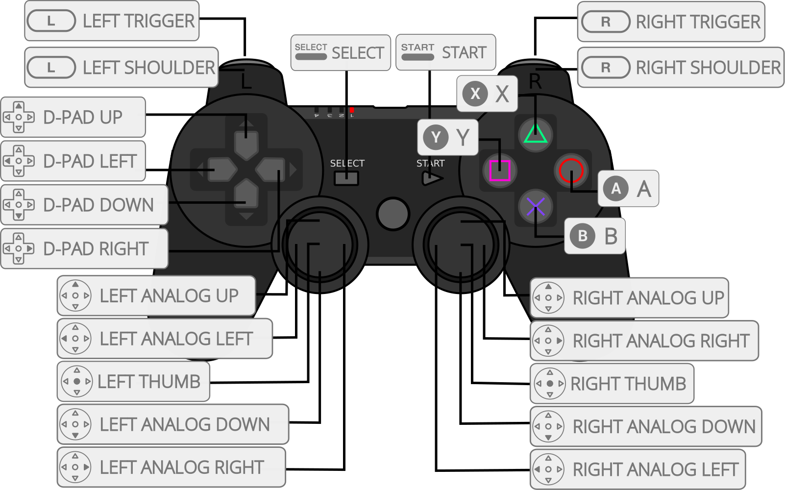
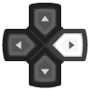

VICE, the Versatile Commodore Emulator¶
Background¶
VICE is a program that runs on a Unix, MS-DOS, Win32, OS/2, BeOS, QNX 4.x, QNX 6.x, Amiga, Syllable or Mac OS X machine and executes programs intended for the old 8-bit computers. The current version emulates the C64, the C64DTV, the C128, the VIC20, practically all PET models, the PLUS4 and the CBM-II (aka C610/C510). An extra emulator is provided for C64 expanded with the CMD SuperCPU.
The VICE cores have been authored by
- VICE Team
The VICE cores are licensed under
A summary of the licenses behind RetroArch and its cores can be found here.
Extensions¶
Content that can be loaded by the VICE cores have the following file extensions:
Floppies¶
- .d64
- .d6z
- .d71
- .d7z
- .d80
- .d81
- .d82
- .d8z
- .g64
- .g6z
- .g41
- .g4z
- .x64
- .x6z
- .nib
- .nbz
- .d2m
- .d4m
Tapes¶
- .t64
- .tap
- .tcrt
Read-only memory¶
- .prg
- .p00
- .crt
- .bin
Other¶
- .cmd
- .m3u
- .vfl
- .vsf
- .zip
- .7z
- .gz
Additional extensions for VIC-20:
- .20
- .40
- .60
- .a0
- .b0
- .rom
Databases¶
RetroArch database(s) that are associated with the VICE cores:
BIOS¶
Required or optional firmware files go in the frontend's system directory (system/vice).
All required files are embedded, ergo these files are optional.
C64 (fast/accurate)¶
| Filename | Description | md5sum |
|---|---|---|
| JiffyDOS_C64.bin | JiffyDOS C64 Kernal | be09394f0576cf81fa8bacf634daf9a2 |
| JiffyDOS_1541-II.bin | JiffyDOS 1541 drive BIOS | 1b1e985ea5325a1f46eb7fd9681707bf |
| JiffyDOS_1571_repl310654.bin | JiffyDOS 1571 drive BIOS | 41c6cc528e9515ffd0ed9b180f8467c0 |
| JiffyDOS_1581.bin | JiffyDOS 1581 drive BIOS | 20b6885c6dc2d42c38754a365b043d71 |
C64 SuperCPU¶
| Filename | Description | md5sum |
|---|---|---|
| JiffyDOS_C64.bin | JiffyDOS C64 Kernal | be09394f0576cf81fa8bacf634daf9a2 |
| JiffyDOS_1541-II.bin | JiffyDOS 1541 drive BIOS | 1b1e985ea5325a1f46eb7fd9681707bf |
| JiffyDOS_1571_repl310654.bin | JiffyDOS 1571 drive BIOS | 41c6cc528e9515ffd0ed9b180f8467c0 |
| JiffyDOS_1581.bin | JiffyDOS 1581 drive BIOS | 20b6885c6dc2d42c38754a365b043d71 |
| scpu-dos-1.4.bin | CMD SuperCPU Kernal 1.4 | cda2fcd2e1f0412029383e51dd472095 |
| scpu-dos-2.04.bin | CMD SuperCPU Kernal 2.04 | b2869f8678b8b274227f35aad26ba509 |
SuperCPU Kernal files go in system/vice/SCPU64.
C128¶
| Filename | Description | md5sum |
|---|---|---|
| JiffyDOS_C128.bin | JiffyDOS C128 Kernal | cbbd1bbcb5e4fd8046b6030ab71fc021 |
| JiffyDOS_C64.bin | JiffyDOS C64 Kernal | be09394f0576cf81fa8bacf634daf9a2 |
| JiffyDOS_1541-II.bin | JiffyDOS 1541 drive BIOS | 1b1e985ea5325a1f46eb7fd9681707bf |
| JiffyDOS_1571_repl310654.bin | JiffyDOS 1571 drive BIOS | 41c6cc528e9515ffd0ed9b180f8467c0 |
| JiffyDOS_1581.bin | JiffyDOS 1581 drive BIOS | 20b6885c6dc2d42c38754a365b043d71 |
Features¶
Frontend-level settings or features that the VICE cores respect.
| Feature | Supported |
|---|---|
| Restart | ✔ |
| Screenshots | ✔ |
| Saves | ✔ |
| States | ✔ |
| Rewind | ✔ |
| Netplay | ✕ |
| Core Options | ✔ |
| RetroAchievements | ✔ |
| RetroArch Cheats | ✔ |
| Native Cheats | ✕ |
| Controls | ✔ |
| Remapping | ✔ |
| Multi-Mouse | ✕ |
| Rumble | ✕ |
| Sensors | ✕ |
| Camera | ✕ |
| Location | ✕ |
| Subsystem | ✕ |
| Softpatching | ✕ |
| Disk Control | ✔ |
| Username | ✕ |
| Language | ✕ |
| Crop Overscan | ✕ |
| LEDs | ✔ |
Directories¶
The VICE cores' internal core names are:
- vice_x64
- vice_x64dtv
- vice_x64sc
- vice_x128
- vice_xcbm2
- vice_xcbm5x0
- vice_xpet
- vice_xplus4
- vice_xscpu64
- vice_xvic
The VICE cores save/load to/from these directories.
Frontend's Save directory
- 'content-name'.nvr (VIC-20 Mega-Cart cartridge battery save)
vice_printer.txt(Printer output in ASCII)vice_work.d64(Work disk in D64 format)vice_work.d71(Work disk in D71 format)vice_work.d81(Work disk in D81 format)vice_work/(Work disk in Directory FileSystem format)
Frontend's State directory
- 'content-name'.state# (State)
Geometry and timing¶
- The VICE cores' core provided FPS is calculated accurately, but are approximately 50 for PAL and 59.940 for NTSC
- The VICE cores' core provided sample rate is 22050/44100/48000/96000 Hz
-
The VICE cores' core provided aspect ratio is automatically set based on core options
-
The VICE C64 core's base width is 384
-
The VICE C64 core's base height is 272 for PAL, 247 for NTSC
-
The VICE VIC-20 core's base width is 448 for PAL, 400 for NTSC
- The VICE VIC-20 core's base height is 284 for PAL, 234 for NTSC
M3U and Disk control¶
When you have a multi disk game, you can use a M3U playlist file to be able to change disks via RetroArch Disc Control interface.
A M3U file is a simple text file with one disk per line (Wikipedia).
Example:
Ultima VI - The False Prophet (1990)(Origin Systems).m3u
Ultima VI - The False Prophet (1990)(Origin Systems)(Disk 1 of 3 Side A)(Game).d64
Ultima VI - The False Prophet (1990)(Origin Systems)(Disk 1 of 3 Side B)(Surface).d64
Ultima VI - The False Prophet (1990)(Origin Systems)(Disk 2 of 3 Side A)(Dungeon).d64
Ultima VI - The False Prophet (1990)(Origin Systems)(Disk 2 of 3 Side B)(Populace A).d64
Ultima VI - The False Prophet (1990)(Origin Systems)(Disk 3 of 3 Side A)(Populace B).d64
Ultima VI - The False Prophet (1990)(Origin Systems)(Disk 3 of 3 Side B)(Populace C).d64
Path can be absolute or relative to the location of the M3U file.
When the game asks for it, you can change the current disk in the RetroArch "Disc Control" menu:
- Eject the current disk with "Eject Disc"
- Select the right disk index with "Current Disc Index"
- Insert the new disk with "Insert Disc"
By default, RetroArch will display the filename (without extension) of each M3U entry when selecting a disk via the Current Disc Index drop-down menu. Custom display labels may be set for each disk using the syntax: DISK_FILE|DISK_LABEL. For example, the following M3U file:
Ultima VI - The False Prophet (1990)(Origin Systems).m3u
Ultima VI - The False Prophet (1990)(Origin Systems)(Disk 1 of 3 Side A)(Game).d64|Game
Ultima VI - The False Prophet (1990)(Origin Systems)(Disk 1 of 3 Side B)(Surface).d64|Surface
Ultima VI - The False Prophet (1990)(Origin Systems)(Disk 2 of 3 Side A)(Dungeon).d64|Dungeon
Ultima VI - The False Prophet (1990)(Origin Systems)(Disk 2 of 3 Side B)(Populace A).d64|Populace A
Ultima VI - The False Prophet (1990)(Origin Systems)(Disk 3 of 3 Side A)(Populace B).d64|Populace B
Ultima VI - The False Prophet (1990)(Origin Systems)(Disk 3 of 3 Side B)(Populace C).d64|Populace C
...will be shown in RetroArch's disk selection menu as:
1: Game
2: Surface
3: Dungeon
4: Populace A
5: Populace B
6: Populace C
If DISK_LABEL is intentionally left blank (i.e. DISK_FILE|) then only the disk index will be displayed.
For games that require a dedicated save disk, one may be generated automatically by entering the following line in an M3U file: #SAVEDISK:VolumeName. VolumeName is optional and may be omitted. For example, this will create a blank, unlabelled disk image at disk index 5:
Elite (1985)(Firebird Software).m3u
Elite (1985)(Firebird Software).d64
#SAVEDISK:
Although one save disk is normally sufficient, an arbitrary number of #SAVEDISK:VolumeName lines may be included. Save disks are located in the frontend's save directory, with the following name: [M3U_FILE_NAME].save[DISK_INDEX].d64.
Save disks generated by the #SAVEDISK: keyword are automatically assigned the label: Save Disk [SAVE_DISK_INDEX].
Extra M3U features¶
#COMMAND:<commands>- Pass arguments to VICE (place first, core name can be skipped)
#SAVEDISK:<label>- Create a save disk in
saves
- Create a save disk in
#LABEL:<label>- Alternative label for the next entry
<disk>.d64:<prg>- Load a program instead of
"*"
- Load a program instead of
<disk>.d64|<label>- Set a friendly name (shown in "Disc Control")
<disks>.zip#<disk>.d64- Specify a disk inside a ZIP with multiple disks (not needed with single file ZIPs)
M3U playlist supports disks, tapes, cartridges and programs.
ZIP support¶
ZIPs are extracted to a temporary directory in saves, bypassing the default frontend extraction.
The temporary directory is emptied but not removed on exit. ZIP is not repacked, which means saves and highscores are lost.
This allows:
- Automatic M3U playlist generation of all files
- The use of zipped images in M3Us
Usage¶
Default controls¶
| RetroPad button | Action |
|---|---|
| D-Pad | Joystick |
| Left Analog | Mouse/paddles |
| B | Fire button 1 / Handle |
| A | Fire button 2 / Base |
| X | Space |
| L2 | Escape (RUN/STOP) |
| R2 | Enter (RETURN) |
| Select (Short) | Toggle virtual keyboard |
| Select (Long) | Toggle statusbar |
| Select (Hold) | Fast-Forward |
| Keyboard key | Action |
|---|---|
| F12 | Toggle statusbar |
| RControl | Switch between joyports |
| End | Reset |
Virtual keyboard¶
The VICE cores have a virtual keyboard that can be accessed by default through RetroPad Select.
The virtual keyboard can be controlled with:
-
RetroPad
Button Action D-Pad Move B Keypress A Toggle transparency Y Toggle ShiftLock Y (Long) Quick map button Y (Very long) Quick clear button X Press Space Start Press Return -
Keyboard
Key Action Cursors Move Enter Keypress CapsLock Toggle ShiftLock -
Mouse
- Touch screen
The virtual keyboard has these additional actions:
- ShiftLock off:
STBR= Toggle statusbarJOYP= Switch joystick portsTRBF= Toggle turbo fire
-
ShiftLock on:
SVDS= Create/Insert & remove save diskASPR= Toggle aspect ratioCROP= Toggle crop mode
-
Reset (Red key with undo icon, obeys 'Reset Type' core option)
- Datasette controls (Reset, Play, Rewind, Forward, Stop)
Long press for sticky keys. Stickying the third key will replace the second.
Joyport control¶
Older C64 games tend to use joystick port 1 and newer ones tend to use port 2 for player 1. There are several ways to switch ports in this core:
- Use the core option:
Quick Menu -> Options -> RetroPad Port - Bring up the virtual keyboard with
Selectbutton, and press the key labeledJOY - Press the default keyboard shortcut
Right Control - Assign
Switch Joyportto any RetroPad button underQuick Menu -> Options - Rename the game, eg.
Bruce_Lee_j1.taporBruce_Lee_(j1).tapfor port 1, and similarlyBruce_Lee_j2.taporBruce_Lee_(j2).tapfor port 2 - Add
-j1or-j2parameters in custom command line.cmd
Core options¶
The VICE cores have the following option(s) that can be tweaked from the core options menu. The default setting is bolded.
Settings with (Restart) means that core has to be closed for the new setting to be applied on next launch.
C64 (fast/accurate/SuperCPU) specific¶
-
Model [vice_c64_model] (C64 PAL auto|C64 NTSC auto|C64C PAL auto|C64C NTSC auto|C64 PAL|C64 NTSC|C64C PAL|C64C NTSC|C64SX PAL|C64SX NTSC|PET64 PAL|PET64 NTSC|C64 GS PAL|C64 JAP NTSC)
'Automatic' switches region per file path tags.
-
JiffyDOS [vice_jiffydos] (disabled|enabled)
For D64/D71/D81 disk images only!
ROMs required in
system/vice:
-JiffyDOS_C64.bin
-JiffyDOS_1541-II.bin
-JiffyDOS_1571_repl310654.bin
-JiffyDOS_1581.bin
C64 (fast/accurate) specific¶
-
RAM Expansion Unit [vice_ram_expansion_unit] (none|128kB|256kB|512kB|1024kB|2048kB|4096kB|16384kB)
Changing while running resets the system!
C64 SuperCPU specific¶
-
SuperCPU SIMM Size [vice_supercpu_simm_size] (0|1|2|4|8|16)
Changing while running resets the system!
-
SuperCPU Speed Switch [vice_supercpu_speed_switch] (disabled|enabled)
-
SuperCPU Kernal [vice_supercpu_kernal] (0|1|2)
JiffyDOS does not work with the internal kernal!
ROMs required in
system/vice/SCPU64:
-scpu-dos-1.4.bin
-scpu-dos-2.04.bin
C128 specific¶
-
Model [vice_c128_model] (C128 PAL|C128 NTSC|C128 DCR PAL|C128 DCR NTSC)
-
Video Output [vice_c128_video_output] (VICII|VDC)
-
GO64 (Restart) [vice_c128_go64] (disabled|enabled)
Start in C64 compatibility mode.
-
JiffyDOS [vice_jiffydos] (disabled|enabled)
'True Drive Emulation' & 1541/1571/1581 drive & ROMs required in
system/vice:
-JiffyDOS_C128.bin
-JiffyDOS_C64.bin
-JiffyDOS_1541-II.bin
-JiffyDOS_1571_repl310654.bin
-JiffyDOS_1581.bin
VIC-20 specific¶
-
Model [vice_vic20_model] (VIC20 PAL auto|VIC20 NTSC auto|VIC20 PAL|VIC20 NTSC|VIC21)
'Automatic' switches region per file path tags.
'VIC21' =
Super VIC (+16K) NTSC -
Memory Expansion [vice_vic20_memory_expansions] (none|3kB|8kB|16kB|24kB|35kB)
Can be forced with filename tags
(8k)&(8kb)or directory tags8k&8kb.Changing while running resets the system!
PLUS/4 specific¶
- Model [vice_plus4_model] (C16 PAL|C16 NTSC|PLUS4 PAL|PLUS4 NTSC|V364 NTSC|232 NTSC)
CBM-II specific¶
- Model [vice_cbm2_model] (610 PAL|610 NTSC|620 PAL|620 NTSC|620PLUS PAL|620PLUS NTSC|710 NTSC|720 NTSC|720PLUS NTSC)
CBM-II 5x0 specific¶
- Model [vice_cbm5x0_model] (510 PAL|510 NTSC)
PET specific¶
- Model [vice_pet_model] (2001|3008|3016|3032|3032B|4016|4032|4032B|8032|8096|8296|SUPERPET)
Common¶
-
Read 'vicerc' [vice_read_vicerc] (disabled|enabled)
Process first found 'vicerc' in this order:
1. 'saves/[content].vicerc'
2. 'saves/vicerc'
3. 'system/vice/vicerc'All available options are dumped in
system/vice/vicerc-dump-[corename]. -
Reset Type [vice_reset] (autostart|soft|hard|freeze)
- 'Autostart' hard resets and reruns content
- 'Soft' keeps some code in memory
- 'Hard' erases all memory
- 'Freeze' is for cartridges
-
Autostart [vice_autostart] (disabled|enabled|warp)
'ON' always runs content, 'OFF' runs only PRG/CRT, 'Warp' turns warp mode on during autostart loading.
-
Automatic Load Warp [vice_autoloadwarp] (disabled|enabled|mute|disk|disk_mute|tape|tape_mute)
Toggle warp mode during disk and/or tape access if there is no audio output.
Mutes 'Drive Sound Emulation', 'Datasette Sound' and 'Audio Leak Emulation' when not ignoring audio.
'True Drive Emulation' required with disks!
-
Warp Boost [vice_warp_boost] (disabled|enabled)
Make warp mode much faster by changing SID emulation to 'FastSID' while warping.
-
True Drive Emulation [vice_drive_true_emulation] (disabled|enabled)
Loads much slower, but some games need it.
Required for 'JiffyDOS', 'Automatic Load Warp' and LED driver interface!
-
Virtual Device Traps [vice_virtual_device_traps] (disabled|enabled)
Required for printer device, but causes loading issues on rare cases.
Enabled forcefully by disabling 'True Drive Emulation'.
-
Floppy Write Protection [vice_floppy_write_protection] (disabled|enabled)
Set device 8 read only.
-
EasyFlash Write Protection [vice_easyflash_write_protection] (disabled|enabled)
Set EasyFlash cartridges read only.
-
Global Work Disk [vice_work_disk] (disabled|8_d64|9_d64|8_d71|9_d71|8_d81|9_d81|8_fs|9_fs)
Work disk in device 8 will not be inserted when floppy content is launched.
-
Cartridge [vice_cartridge] (disabled)
Cartridge images go in 'system/vice/[corename]'.
Changing while running resets the system!
Video options¶
-
Show Video Options [vice_video_options_display] (disabled|enabled)
Page refresh by menu toggle required!
-
Pixel Aspect Ratio [vice_aspect_ratio] (auto|pal|ntsc|raw)
Hotkey toggling disables this option until core restart.
-
Crop [vice_crop] (disabled|small|medium|maximum|auto|auto_disable|manual)
Remove borders according to 'Crop Mode'.
-
Crop Mode [vice_crop_mode] (both|horizontal|vertical|16:9|16:10|4:3|5:4)
'Horizontal + Vertical' & 'Maximum' removes borders completely. Ignored with 'Manual' zoom.
-
Manual Crop Top [vice_manual_crop_top] (0-60)
-
Manual Crop Bottom [vice_manual_crop_bottom] (0-60)
-
Manual Crop Left [vice_manual_crop_left] (0-60)
-
Manual Crop Right [vice_manual_crop_right] (0-60)
-
Color Depth (Restart) [vice_gfx_colors] (16bit|24bit)
'24-bit' is slower and not available on all platforms. Full restart required.
Color palette options¶
VIC-II (C64, C128, CBM-II 5x0)¶
-
VIC-II Filter [vice_vicii_filter] (disabled|enabled|enabled_medblur|enabled_lowblur|enabled_noblur)
PAL emulation filter with custom horizontal blur.
-
VIC-II Filter Oddline Phase [vice_vicii_filter_oddline_phase] (1000|20-2000)
PAL emulation filter oddline phase. Applies with 'Internal' palette only!
-
VIC-II Filter Oddline Offset [vice_vicii_filter_oddline_offset] (1000|20-2000)
PAL emulation filter oddline offset.
-
VIC-II Color Palette [vice_external_palette] (default|colodore|pepto-pal|pepto-ntsc|pepto-ntsc-sony|cjam|c64hq|c64s|ccs64|community-colors|deekay|frodo|godot|pc64|ptoing|rgb|vice)
'Colodore' is recommended for the most accurate colors.
-
VIC-II Color Gamma [vice_vicii_color_gamma] (2800|1000-4000)
Gamma for the internal palette.
-
VIC-II Color Brightness [vice_vicii_color_brightness] (1000|20-2000)
Brightness for the internal palette.
-
VIC-II Color Contrast [vice_vicii_color_contrast] (1000|20-2000)
Contrast for the internal palette.
-
VIC-II Color Saturation [vice_vicii_color_saturation] (1000|20-2000)
Saturation for the internal palette.
-
VIC-II Color Tint [vice_vicii_color_tint] (1000|20-2000)
Tint for the internal palette.
VIC (VIC-20)¶
-
VIC Filter [vice_vic_filter] (disabled|enabled|enabled_medblur|enabled_lowblur|enabled_noblur)
PAL emulation filter with custom horizontal blur.
-
VIC Filter Oddline Phase [vice_vic_filter_oddline_phase] (1000|20-2000)
PAL emulation filter oddline phase. Applies with 'Internal' palette only!
-
VIC Filter Oddline Offset [vice_vic_filter_oddline_offset] (1000|20-2000)
PAL emulation filter oddline offset.
-
VIC Color Palette [vice_vic20_external_palette] (default|colodore_vic|mike-pal|mike-ntsc|vice)
'Colodore' is recommended for the most accurate colors.
-
VIC Color Gamma [vice_vic_color_gamma] (2800|1000-4000)
Gamma for the internal palette.
-
VIC Color Brightness [vice_vic_color_brightness] (1000|20-2000)
Brightness for the internal palette.
-
VIC Color Contrast [vice_vic_color_contrast] (1000|20-2000)
Contrast for the internal palette.
-
VIC Color Saturation [vice_vic_color_saturation] (1000|20-2000)
Saturation for the internal palette.
-
VIC Color Tint [vice_vic_color_tint] (1000|20-2000)
Tint for the internal palette.
TED (PLUS/4)¶
-
TED Filter [vice_ted_filter] (disabled|enabled|enabled_medblur|enabled_lowblur|enabled_noblur)
PAL emulation filter with custom horizontal blur.
-
TED Filter Oddline Phase [vice_ted_filter_oddline_phase] (1000|20-2000)
PAL emulation filter oddline phase. Applies with 'Internal' palette only!
-
TED Filter Oddline Offset [vice_ted_filter_oddline_offset] (1000|20-2000)
PAL emulation filter oddline offset.
-
TED Color Palette [vice_plus4_external_palette] (default|colodore_ted|yape-pal|yape-ntsc)
'Colodore' is recommended for the most accurate colors.
-
TED Color Gamma [vice_ted_color_gamma] (2800|1000-4000)
Gamma for the internal palette.
-
TED Color Brightness [vice_ted_color_brightness] (1000|20-2000)
Brightness for the internal palette.
-
TED Color Contrast [vice_ted_color_contrast] (1000|20-2000)
Contrast for the internal palette.
-
TED Color Saturation [vice_ted_color_saturation] (1000|20-2000)
Saturation for the internal palette.
-
TED Color Tint [vice_ted_color_tint] (1000|20-2000)
Tint for the internal palette.
CRTC (CBM-II, PET)¶
-
CRTC Filter [vice_crtc_filter] (disabled|enabled|enabled_medblur|enabled_lowblur|enabled_noblur)
PAL emulation filter with custom horizontal blur.
-
CRTC Filter Oddline Phase [vice_crtc_filter_oddline_phase] (1000|20-2000)
PAL emulation filter oddline phase. Applies with 'Internal' palette only!
-
CRTC Filter Oddline Offset [vice_crtc_filter_oddline_offset] (1000|20-2000)
PAL emulation filter oddline offset.
-
CRTC Color Palette [vice_cbm2_external_palette] (default|green|amber|white)
-
CRTC Color Palette [vice_pet_external_palette] (default|green|amber|white)
On-Screen Display options¶
-
Virtual KBD Theme [vice_vkbd_theme] (auto|auto_outline|brown|brown_outline|beige|beige_outline|dark|dark_outline|light|light_outline)
The keyboard comes up with RetroPad Select by default.
-
Virtual KBD Transparency [vice_vkbd_transparency] (0%|25%|50%|75%|100%)
Keyboard transparency can be toggled with RetroPad A.
-
Virtual KBD Dimming [vice_vkbd_dimming] (0%|25%|50%|75%|100%)
Dimming level of the surrounding area.
-
Statusbar Mode [vice_statusbar] (bottom|bottom_minimal|bottom_basic|bottom_basic_minimal|top|top_minimal|top_basic|top_basic_minimal)
- 'Full': Joyports + Current image + LEDs
- 'Basic': Current image + LEDs
- 'Minimal': Track number + FPS hidden
-
Statusbar Messages [vice_statusbar_messages] (disabled|enabled)
Show messages when statusbar is hidden.
-
Light Pen/Gun Pointer Color [vice_joyport_pointer_color] (disabled|black|white|red|green|blue|yellow|purple)
Crosshair color for light pens and guns.
Audio options¶
-
Show Audio Options [vice_audio_options_display] (disabled|enabled)
Page refresh by menu toggle required!
-
Drive Sound Emulation [vice_drive_sound_emulation] (disabled|5%|10%|15%|20%|25%|30%|35%|40%|45%|50%|55%|60%|65%|70%|75%|80%|85%|90%|95%|100%)
'True Drive Emulation' & D64/D71 disk image required.
-
Datasette Sound [vice_datasette_sound] (disabled|5%|10%|15%|20%|25%|30%|35%|40%|45%|50%|55%|60%|65%|70%|75%|80%|85%|90%|95%|100%|-1)
TAP tape image required.
'-1': 100% + Mute
-
(VIC-II/VIC/TED) Audio Leak Emulation [vice_audio_leak_emulation] (disabled|1|2|3|4|5|6|7|8|9|10)
Graphic chip to audio leak emulation.
-
SID Engine [vice_sid_engine] (FastSID|ReSID|ReSID-FP)
'ReSID' is accurate, 'ReSID-FP' is more accurate, 'FastSID' is the last resort.
-
SID Model [vice_sid_model] (default|6581|8580|8580RD)
C64 has '6581', C64C has '8580'.
-
SID Extra [vice_sid_extra] (disabled|0xd420|0xd500|0xde00|0xdf00)
Second SID base address.
-
ReSID Sampling [vice_resid_sampling] (fast|interpolation|fast resampling|resampling)
'Resampling' provides best quality. Defaults to 'fast' on low-power systems and x64-core.
-
ReSID Filter Passband [vice_resid_passband] (0|10|20|30|40|50|60|70|80|90)
Resampling filter passband in percentage of the total bandwidth.
-
ReSID Filter Gain [vice_resid_gain] (90|91|92|93|94|95|96|97|98|99|100)
Filter gain in percent.
-
ReSID Filter 6581 Bias [vice_resid_filterbias] (-5000|-4500|-4000|-3500|-3000|-2500|-2000|-1500|-1000|-500|0|500|1000|1500|2000|2500|3000|3500|4000|4500|5000)
Filter bias for 6581, which can be used to adjust DAC bias in millivolts.
-
ReSID Filter 8580 Bias [vice_resid_8580filterbias] (-5000|-4500|-4000|-3500|-3000|-2500|-2000|-1500|-1000|-500|0|500|1000|1500|2000|2500|3000|3500|4000|4500|5000)
Filter bias for 8580, which can be used to adjust DAC bias in millivolts.
-
SFX Sound Expander [vice_sfx_sound_expander] (disabled|3526|3812)
Sound synthesizer cartridge with 9 voices.
-
Sample Rate [vice_sound_sample_rate] (22050|44100|48000|96000)
Sound sample rate in Hz.
Input options¶
-
Analog Stick Mouse [vice_analogmouse] (disabled|left|right|both)
Override analog stick remappings when non-joysticks are used.
'OFF' controls mouse/paddles with both analogs when remappings are empty. -
Analog Stick Mouse Deadzone [vice_analogmouse_deadzone] (0|5|10|15|20|25|30|35|40|45|50)
Required distance from stick center to register input.
-
Analog Stick Mouse Speed [vice_analogmouse_speed] (0.1|0.2|0.3|0.4|0.5|0.6|0.7|0.8|0.9|1.0|1.1|1.2|1.3|1.4|1.5|1.6|1.7|1.8|1.9|2.0|2.1|2.2|2.3|2.4|2.5|2.6|2.7|2.8|2.9|3.0)
Mouse movement speed multiplier for analog stick.
-
D-Pad Mouse Speed [vice_dpadmouse_speed] (1|2|3|4|5|6|7|8|9|10|11|12|13|14|15|16|17|18)
Mouse movement speed multiplier for directional pad.
-
Mouse Speed [vice_mouse_speed] (10|20|30|40|50|60|70|80|90|100|110|120|130|140|150|160|170|180|190|200|210|220|230|240|250|260|270|280|290|300)
Global mouse speed.
-
Userport Joystick Adapter [vice_userport_joytype] (disabled|CGA|HIT|Kingsoft|Starbyte|Hummer|OEM|PET)
Required for more than 2 joysticks, for example IK+ Gold with 3 players.
-
Keyrah Keypad Mappings [vice_keyrah_keypad_mappings] (disabled|enabled)
Hardcoded keypad to joyport mappings for Keyrah hardware.
-
Keyboard Keymap [vice_keyboard_keymap] (positional|symbolic|positional-user|symbolic-user)
User-defined keymaps go in
system/vice/[corename].
- Positional:sdl_pos.vkm
- Symbolic:sdl_sym.vkm -
Keyboard Pass-through [vice_physical_keyboard_pass_through] (disabled|enabled)
'ON' passes all physical keyboard events to the core. 'OFF' prevents RetroPad keys from generating keyboard events.
-
Datasette Hotkeys [vice_datasette_hotkeys] (disabled|enabled)
Toggle all Datasette hotkeys.
-
Show Mapping Options [vice_mapping_options_display] (disabled|enabled)
Page refresh by menu toggle required!
-
Toggle Virtual Keyboard [vice_mapper_vkbd] (---)
-
Toggle Statusbar [vice_mapper_statusbar] (RETROK_F12)
-
Switch Joyport [vice_mapper_joyport_switch] (RETROK_RCTRL)
-
Reset [vice_mapper_reset] (RETROK_END)
-
Hold Warp Mode [vice_mapper_warp_mode] (---)
-
Toggle Aspect Ratio [vice_mapper_aspect_ratio_toggle] (---)
-
Toggle Zoom Mode [vice_mapper_zoom_mode_toggle] (---)
-
Toggle Datasette Hotkeys [vice_mapper_datasette_toggle_hotkeys] (---)
-
Datasette Start [vice_mapper_datasette_start] (RETROK_UP)
-
Datasette Stop [vice_mapper_datasette_stop] (RETROK_DOWN)
-
Datasette Rewind [vice_mapper_datasette_rewind] (RETROK_LEFT)
-
Datasette Forward [vice_mapper_datasette_forward] (RETROK_RIGHT)
-
Datasette Reset [vice_mapper_datasette_reset] (---)
-
RetroPad Select [vice_mapper_select] (TOGGLE_VKBD)
-
RetroPad Start [vice_mapper_start] (---)
-
RetroPad B [vice_mapper_b] (---)
-
RetroPad A [vice_mapper_a] (---)
-
RetroPad Y [vice_mapper_y] (---)
-
RetroPad X [vice_mapper_x] (RETROK_SPACE)
-
RetroPad L [vice_mapper_l] (---)
-
RetroPad R [vice_mapper_r] (---)
-
RetroPad L2 [vice_mapper_l2] (RETROK_ESCAPE)
-
RetroPad R2 [vice_mapper_r2] (RETROK_RETURN)
-
RetroPad L3 [vice_mapper_l3] (---)
-
RetroPad R3 [vice_mapper_r3] (---)
-
RetroPad Left Analog Up [vice_mapper_lu] (---)
-
RetroPad Left Analog Down [vice_mapper_ld] (---)
-
RetroPad Left Analog Left [vice_mapper_ll] (---)
-
RetroPad Left Analog Right [vice_mapper_lr] (---)
-
RetroPad Right Analog Up [vice_mapper_ru] (---)
-
RetroPad Right Analog Down [vice_mapper_rd] (---)
-
RetroPad Right Analog Left [vice_mapper_rl] (---)
-
RetroPad Right Analog Right [vice_mapper_rr] (---)
-
RetroPad Turbo Fire [vice_turbo_fire] (disabled|enabled)
Hotkey toggling disables this option until core restart.
-
RetroPad Turbo Button [vice_turbo_fire_button] (B|A|Y|X|L|R|L2|R2)
Replace the mapped button with turbo fire button.
-
RetroPad Turbo Pulse [vice_turbo_pulse] (2|4|6|8|10|12)
Frames in a button cycle.
-
RetroPad Port [vice_joyport] (1|2)
Most games use port 2, some use port 1. Filename forcing or hotkey toggling disables this option until core restart.
-
RetroPad Port Type [vice_joyport_type] (1|2|3|4|5|6|7|8|9|10|11|12|13|14|15|16)
Value Label 1 Joystick 2 Paddles 3 Mouse (1351) 4 Mouse (NEOS) 5 Mouse (Amiga) 6 Trackball (Atari CX-22) 7 Mouse (Atari ST) 8 Mouse (SmartMouse) 9 Mouse (Micromys) 10 Koalapad 11 Light Pen (Up trigger) 12 Light Pen (Left trigger) 13 Light Pen (Datel) 16 Light Pen (Inkwell) 14 Light Gun (Magnum Light Phaser) 15 Light Gun (Stack Light Rifle) -
RetroPad Face Button Options [vice_retropad_options] (disabled|jump|rotate|rotate_jump)
Rotate face buttons clockwise and/or make 2nd fire press up.
Value Label disabled B = Fire, A = 2nd fire jump B = Fire, A = Up rotate Y = Fire, B = 2nd fire rotate_jump Y = Fire, B = Up
Controllers¶
The VICE cores support the following device type(s) in the controls menu, bolded device types are the default for the specified user(s):
User 1 - 5 device types¶
- None - Input disabled.
- RetroPad - Joypad - Standard one fire button joystick + customizable buttons with keyboard keys and hotkeys.
- Joystick - Joypad - Standard one fire button joystick.
- Keyboard - Keyboard - Keyboard input are always active. Has keymapper support.
Other controllers¶
- Mouse - Paddles and mice, enabled only when 'RetroPad Port Type' has a non-joystick selected.
Controller tables¶
Joypad¶

| Input descriptors for Retropad | RetroPad Inputs |
|---|---|
| D-Pad Up |  |
| D-Pad Down |  |
| D-Pad Left |  |
| D-Pad Right |  |
| B / Fire |  |
| A | |
| Y |  |
| X |  |
| Select |  |
| Start |  |
| L |  |
| R |  |
| L2 |  |
| R2 |  |
| L3 |  |
| R3 |  |
| Left Analog X | X |
| Left Analog Y | Y |
| Right Analog X | X |
| Right Analog Y | Y |
| Input descriptors for Joystick | RetroPad Inputs |
|---|---|
| D-Pad Up | |
| D-Pad Down | |
| D-Pad Left | |
| D-Pad Right | |
| B / Fire | |
Keyboard¶
English positional layout
| RetroKeyboard Special Inputs | Commodore |
|---|---|
| Keyboard Backquote | Left arrow |
| Keyboard Tab | CTRL |
| Keyboard Escape | RUN/STOP |
| Keyboard Left Control | C= (Commodore) |
| Keyboard Backspace | DEL |
| Keyboard Page Up | RESTORE |
| Keyboard Home | CLR/HOME |
| Keyboard Left Bracket | @ |
| Keyboard Right bracket | * |
| Keyboard Insert | £ |
| Keyboard Delete | Up arrow / Pi |
| Keyboard Backslash | = |
External Links¶
- Official VICE Website
- Libretro VICE Github repository
- Report Libretro VICE core issues here
- Vice x64sc, accurate Gameplay Videos
- Gameplay Videos